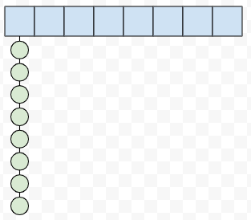
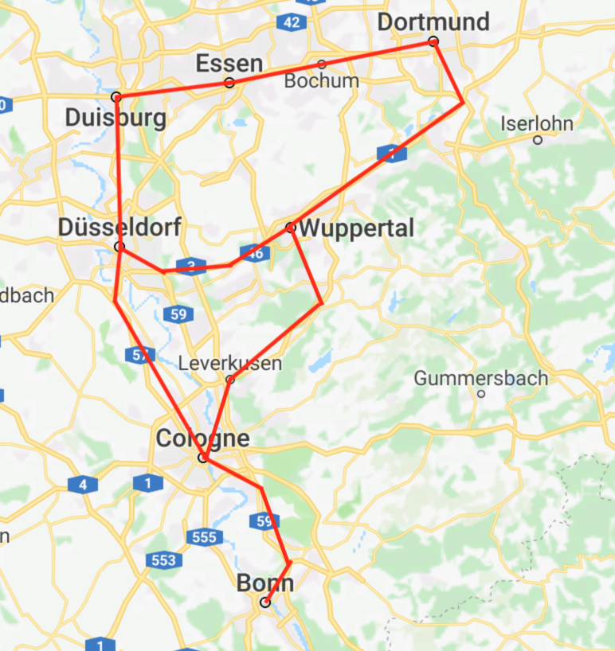
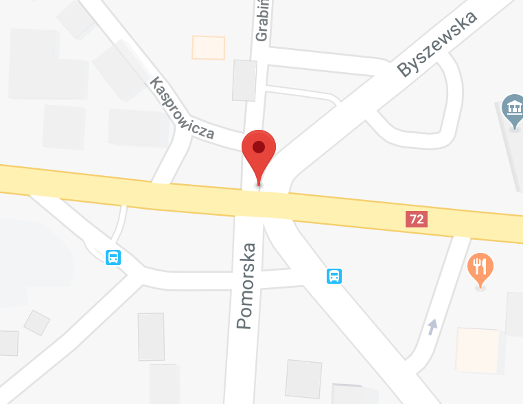
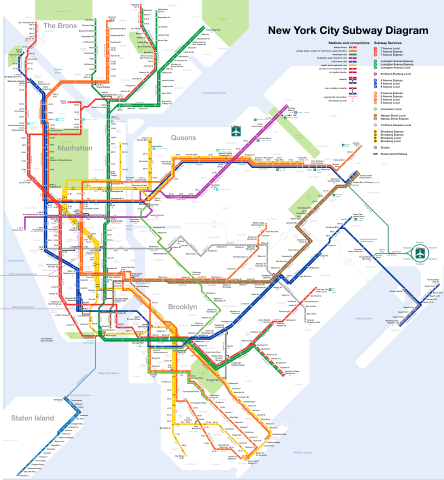
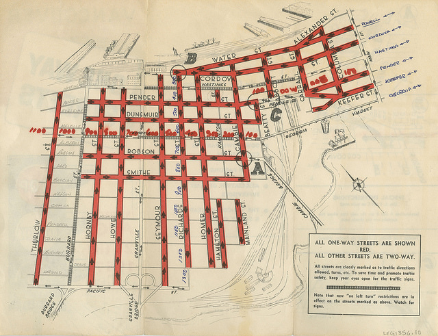
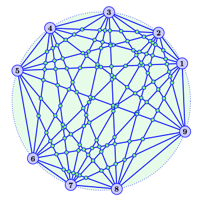
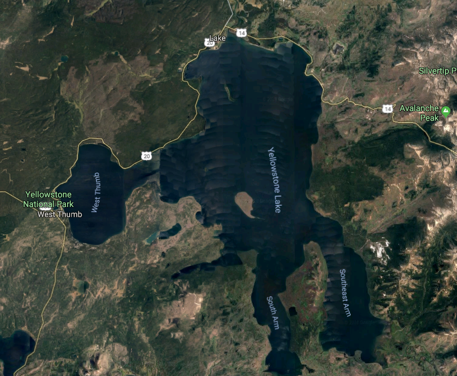
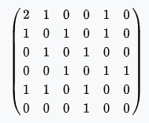
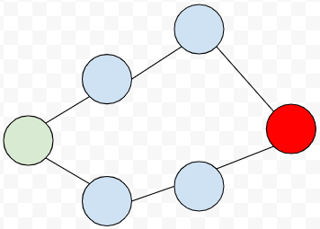
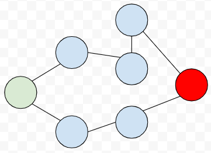

Computer Science 2: Algorithms
Detroit Labs Dev Coaching
2018
Lecture 6
Sorting in \(o(n \log n)\)
- Decision tree
- Same data → Same comparisons
- Different data → Different comparisons
- Same decisions
Worst case?
Is the height of the decision tree the worst case complexity for sorting?
Lower bounds
- Permutations have different steps to sort
- \(n!\) paths from the root to the leaves, and \(n!\) leaves.
\[n! \le 2^h \rightarrow h \ge \log(n!)\]
\[n! > {n \over 2}^{({n \over 2})}\]
\[log(n!) > log({n \over 2}^{({n \over 2})}) = {n \over 2} log({n \over 2}) \rightarrow \theta(n \log n)\]
Stirling's approximation
\[n! \sim {\sqrt {2\pi n}}({n \over e})^n\]
\[h \ge \log({n \over e})^n = n \log n - n \log e = \Omega(n \log n)\]
Card Sorting
How would you sort a deck of cards?

Non-comparison sorting
- 13 piles
- same numbers go in piles
- constant size per pile = n2 sort per pile
- merge piles
Bucketsort
If we need to sort \(n\) numbers from 1 to \(m\), assuming the numbers are relatively uniformly distributed:
- set up \(n\) buckets
- each bucket covers \(m \over n\) interval
- \(\forall x\), add to bucket \(xn \over m\)
- If backed by array, \(O(1)\) per item, \(O(n)\) for whole set
Breaking the rules?
If the elements are uniformly distributed, we should have only 1 item per bucket, so we don't need to sort the buckets before merging, or \(O(1)\).
This leaves us with a very speedy \(O(n)\) sort!
What happened to our \(\Omega(n \log n)\) lower boundary?!
Worst case

"Real World" Distributions
We "shouldn't" come across the worst case if we understand the distribution of our data.
What about a phone book?
- Will there be many people named Dotz?
- How about Brown?
- Li? Gonzalez?
We need to be sure of our data if we're going to make assumptions about its distribution. Otherwise, we need to pick a randomized algorithm or one with a good worst-case!
Can't beat the bound
\(O(nm)\) to sort \(n\) strings of \(m\) length
\(m \ge \Omega(\log n)\) for values to be distinct.

There are specific cases of sorts that work faster in certain cases, but in general for sorting \(n\) arbitrary, distinct values, we cannot beat \(\theta(n \log n)\)
Nuts and bolts problem
You are given \(n\) bolts of different sizes and \(n\) corresponding nuts. Trying a nut on a bolt tells you whether they are too big, too small, or a good fit. Differences between pairs are indistinguishable without testing, so you cannot compare 2 bolts or 2 nuts. Match each bolt to each nut.
- Give a \(O(n^2)\) algorithm
- Find the smallest bolt and its nut. This can be done in \(2n - 2\) comparisons.
- Match all nuts and bolts in expected \(O(n \log n)\) time.
Graphs
A graph \(G = (V, E)\) is a set of vertices \(V\) and a set of edges \(E\) which are pairs of vertices from \(V\).
Roads
|  |  |
Circuits

Graph problems
- Social Networks
- The World-wide web
- Control flow in a computer program
- Pairwise similarities between items
Properties of graphs
- Undirected / Directed
- Unweighted / Weighted
- Simple / Not Simple
- Sparse / Dense
- Cyclic / Acyclic
- Embedded / Topological
Undirected / Directed
A graph \(G = (V,E)\) is undirected if edge \((x,y) \in E\) implies \((y,x) \in E\)
|  |  |
Unweighted / Weighted
In a weighted graph, each edge or vertex has a weight associated with it, usually a numerical value.

Simple / Not Simple
 |
 |
Sparse / Dense

Cyclic / Acyclic
 |
 |
Embedded / Topological
|  |
Friendship graphs
- vertices = people
- edges = friendship
Are we friends?
An undirected graph means an edge represents both \((x,y)\) and \((y,x)\).
- a "heard-of" graph would be directed.
- a "went-on-date" graph is presumably undirected.
Six Degrees of Kevin Bacon
A path is a sequence of edges between two vertices.
By measuring the path between two vertices we can establish how many edges (relationships) there are between two people in our graph.
Most often, we're interested in the shortest path.
Can we meet?
A graph is connected if there is some path between any two vertices.
A graph is strongly connected if there is a directed path between any two vertices.
Who's the most popular?
The degree of a graph is the number of edges adjacent to it, so the vertex with the most edges would be the most popular person in our graph of friends.
Cliques
In graph theory, a clique is a complete subgraph where each vertex pair has an edge between them.
Data Structures for Graphs
- Adjacency Matrices
- Adjacency Lists
For a graph \(G = (V,E)\), assume that we have \(n\) vertices and \(m\) edges.
Adjacency Matrix
We can use a matrix to represent a graph by making an \(n\) by \(n\) matrix \(M\). If there is an edge between two vertices, \(M[i, j]\) will be true.
Adjacency Matrix
 |
 |
Adjacency List
We can represent a graph by making an array of size \(n\), where the \(i\) th element contains a linked list of vertices that form an edge with \(i\). Thus, if \((i,j)\) is an edge in the graph, the \(i\) th list will contain \(j\).
Finding edges will take \(O(d_i)\) where \(d\) is the degree of the vertex.
Adjacency List

Analyzing Operations
| Operation | Matrix | List |
|---|---|---|
| Test if (x,y) exists | ||
| Find vertex degree | ||
| Memory on small graphs | ||
| Memory on big graphs | ||
| Edge insertion or deletion | ||
| Traversal |
Graph Operations
Traversal
One of the most important operations is traversing every edge and vertex. We need this so be systematic so that we don't miss anything, and we want to visit each edge the fewest number of times, twice at the most.
Escape the Maze

Marking
- undiscovered: not yet seen
- discovered: have visited, but haven't visited all edges
- processed: have visited vertex and all incident edges
Discovery Queue
Breadth-First Traversal
BFS Data Structures
- FIFO Queue
- 2 \(n\) -sized arrays of booleans
- An \(n\) -sized array of integers
bool processed[MAXV];
bool discovered[MAXV];
int parent[MAXV];
BFS Animated
Finding paths with parent
By using the parent array, we can easily find paths.
int path_length = 0;
while(i != 0) {
i = parent[i];
path_length++;
}
Shortest Paths
|  |  |
Recursion and Shortest Paths
find_path(int start, int end, int parents[]) {
if ((start == end) || (end == -1))
printf(”%d”, start);
else {
find_path(start, parents[end], parents);
printf(” %d”, end);
}
}
Connected Components

Coloring Graphs

Practice Problem
Provide algorithms for converting between data structures for an undirected graph \(G\) with \(n\) vertices and \(m\) edges. They should be correct and efficient, and supply the time complexity of each algorithm.
- Convert from an adjacency matrix to adjacency lists.
- Convert from an adjacency list to an incidence matrix.
- Convert from an incidence matrix to adjacency lists.
An incidence matrix M has a row for each vertex and a column for each edge, such that \(M[i,j] = 1\) if vertex \(i\) is part of edge \(j\), otherwise \(M[i,j] = 0\).